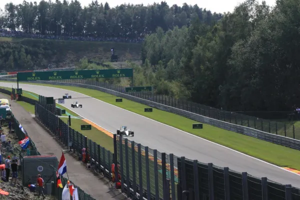

The Beginnings
Formula 1 racing began in 1950, marking the start of a new era in motorsport. The first World Championship race was held at Silverstone, and since then, the sport has evolved into a global phenomenon.
"Formula 1 Race Circuit de Spa Belgium 2015" by evangelinarangel is licensed under CC BY 2.0.
Decades of Development
Over the decades, Formula 1 has seen tremendous technological advancements, shaping the cars and competitions we see today. From the introduction of turbocharged engines to the development of aerodynamic designs, each decade brought its own challenges and breakthroughs.
- 1960s: The emergence of aerodynamics
- 1970s: The turbo era begins
- 1980s: Electronic aids and the rise of McLaren
- 1990s to present: Safety improvements and hybrid technology
"Moving a Lotus 25/33 R7 Formula 1 car up the stairs" by Nationalmuseum Stockholm is licensed under CC BY-SA 2.0
Modern Era
The 21st century introduced the hybrid era, with a focus on sustainability and efficiency. Teams like Mercedes, Red Bull, and Ferrari have dominated the scene, with drivers such as Lewis Hamilton and Sebastian Vettel becoming household names.
Learn more about current F1 technologyKey Terms in F1 History
- Constructor
- The team responsible for designing and building the race cars. Constructors compete for their own championship.
- Grand Prix
- A race event that takes place in different countries, each contributing to the World Championship.
- Pole Position
- The first place on the starting grid, awarded to the driver with the fastest time in qualifying.